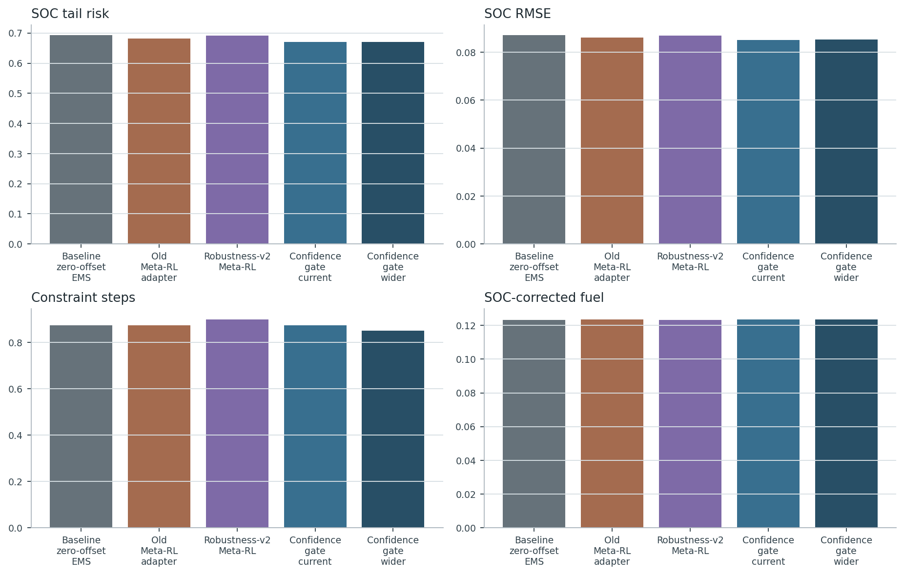
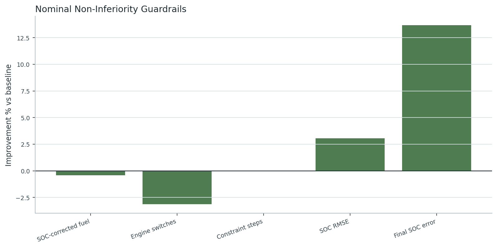
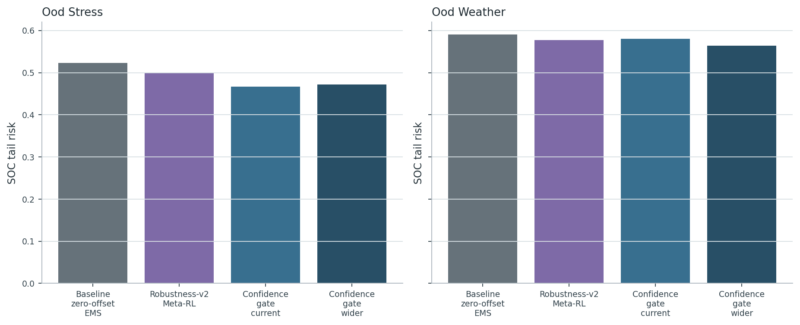
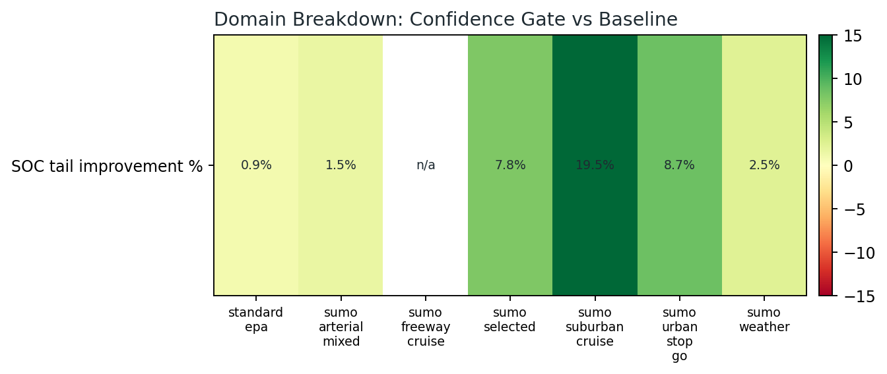
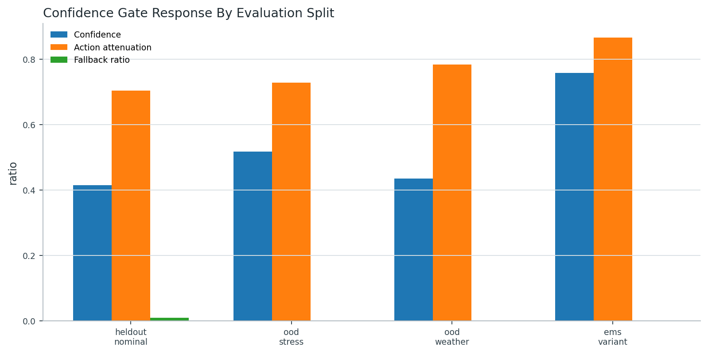
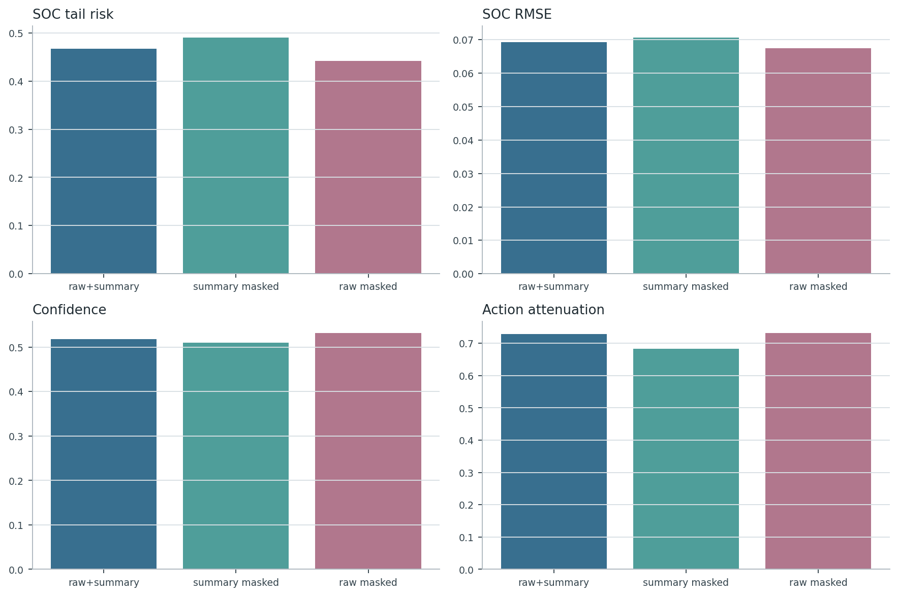
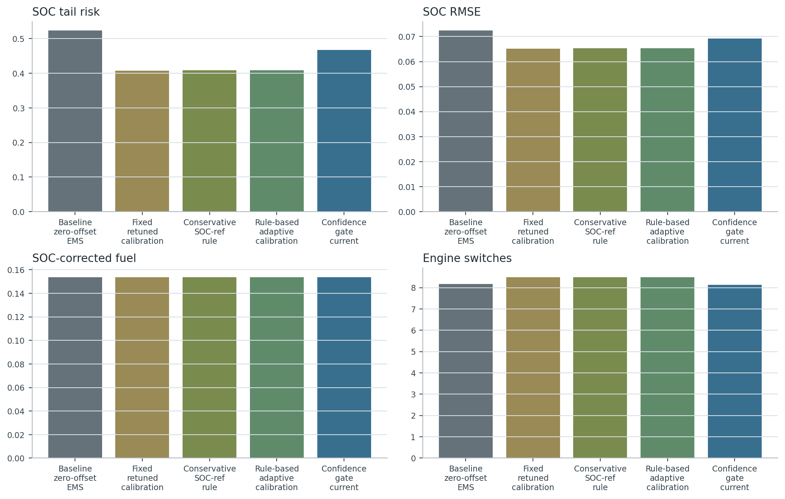
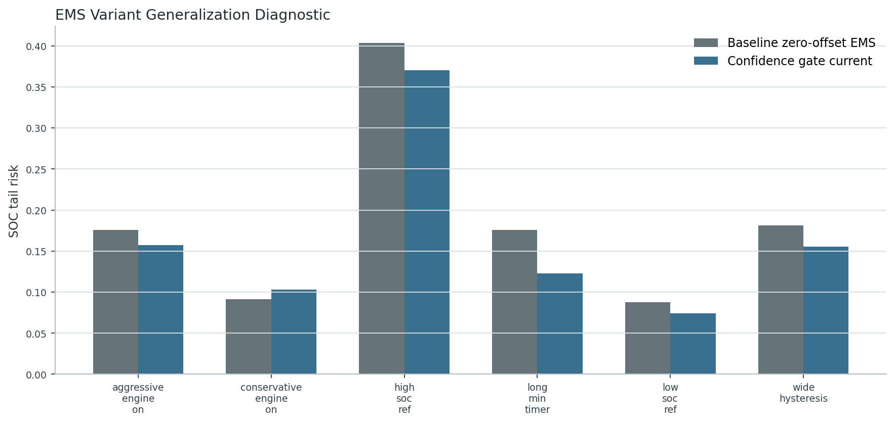

executed
5. Main Experiment
일반/heldout 조건에서 baseline behavior를 보존하면서 stress/OOD에서 SOC robustness 개선 여부를 확인.
heldout nominal 기준 confidence_gate_current SOC tail risk=0.66987, baseline=0.69253.

executed
6. Non-Inferiority
nominal 주행에서 fuel/switch/constraint/SOC guardrail을 넘지 않는지 확인.
guardrail 4/5 passed for confidence_gate_current under heldout_nominal.

executed
7. Stress/OOD Robustness
low SOC, high mass, uphill, weather/friction shift에서 tail risk와 constraint 변화를 본다.
ood_stress SOC tail risk baseline=0.52311, gate_current=0.46737.

diagnostic_executed_full_retrain_pending
8. Weather-In-Training
weather-diverse meta-training이 heldout weather 적응을 개선하는지 확인해야 한다.
이번 suite는 생성된 dry/wet/heavy_rain/snow/ice profile 위에서 기존 dry/canonical-trained 정책을 재평가했다. weather-augmented 5-seed retraining은 별도 장기 run으로 남겨야 한다.

executed
9. Weather-Heldout Confidence
학습에서 충분히 보지 못한 weather/friction shift에서 confidence가 낮아지고 baseline-like behavior로 보수화되는지 확인.
confidence_gate_current mean confidence nominal=0.416, ood_weather=0.435.

executed
10. Confidence Gate Ablation
no-gate, current bound, wider bound를 비교해 gate가 개입량/안전성을 어떻게 바꾸는지 확인.
heldout nominal fallback ratio current=0.010, wider=0.010.
posthoc_mask_executed_retrained_ablation_pending
11. Raw/Summary Encoder Ablation
raw history는 transient 변화, summary는 task-level 안정성을 담당하는지 확인.
이번 결과는 retraining ablation이 아니라 trained raw+summary policy의 inference-time branch masking 진단이다. 논문 본문용 강한 claim에는 raw_only/summary_only 재학습이 추가로 필요하다.

executed_partial
12. Simpler Baseline Comparison
fixed retuned EMS와 hand-designed adaptive calibration보다 Meta-RL이 stress/OOD 적응에 유리한지 확인.
fixed retuned, conservative SOC-ref rule, rule-based adaptive calibration을 같은 manifest에서 실행했다. contextual SAC/supervised predictor/ECMS-like baseline은 다음 장기 비교군으로 남는다.

diagnostic_executed
13. EMS Variant Generalization
다른 map/rule EMS calibration variant에서도 adapter가 같은 경향을 유지하는지 확인.
conservative/aggressive engine-on map, SOC_ref, hysteresis, min timer 변형에서 재학습 없이 transfer 평가했다. 이 결과 전에는 any-EMS claim은 금지한다.

included_existing_executed_result
14. DP/Oracle Reference
adapter가 동일 권한 bounded-offset DP oracle 개선 여지를 얼마나 회수하는지 확인.
기존 bounded-offset DP와 full power-split diagnostic DP 결과를 suite에 연결했다. full split DP는 deployable controller가 아니라 offline diagnostic upper reference다.

executed
15. Domain Breakdown
EPA/NGSIM/commercial/SUMO/weather/stress domain별로 결과를 분리해 SUMO-only claim을 피한다.
domain groups evaluated: 7.
핵심 metric table
각 controller group은 seed 평균이며, baseline rule controller는 seed가 하나다.
| split | controller | SOC tail | SOC RMSE | constraint | SOC-corr fuel | confidence |
|---|---|---|---|---|---|---|
| heldout_nominal | Confidence gate current | 0.66987 | 0.08506 | 0.87500 | 0.12360 | 0.41576 |
| heldout_nominal | Confidence gate wider | 0.66996 | 0.08536 | 0.85000 | 0.12362 | 0.41591 |
| heldout_nominal | Baseline zero-offset EMS | 0.69253 | 0.08706 | 0.87500 | 0.12325 | 1.00000 |
| heldout_nominal | Old Meta-RL adapter | 0.68144 | 0.08603 | 0.87500 | 0.12343 | 1.00000 |
| heldout_nominal | Robustness-v2 Meta-RL | 0.69139 | 0.08691 | 0.90000 | 0.12328 | 1.00000 |
| ood_stress | Confidence gate current | 0.46737 | 0.06924 | 0.75000 | 0.15382 | 0.51811 |
| ood_stress | Confidence gate wider | 0.47157 | 0.06934 | 0.75000 | 0.15387 | 0.51980 |
| ood_stress | Baseline zero-offset EMS | 0.52311 | 0.07237 | 0.75000 | 0.15368 | 1.00000 |
| ood_stress | Old Meta-RL adapter | 0.50801 | 0.07136 | 0.75000 | 0.15377 | 1.00000 |
| ood_stress | Robustness-v2 Meta-RL | 0.50072 | 0.07133 | 0.75000 | 0.15377 | 1.00000 |
| ood_weather | Confidence gate current | 0.58075 | 0.08032 | 0.06250 | 0.06101 | 0.43537 |
| ood_weather | Confidence gate wider | 0.56446 | 0.07894 | 0.08750 | 0.06100 | 0.44989 |
| ood_weather | Baseline zero-offset EMS | 0.59073 | 0.08106 | 0.06250 | 0.06099 | 1.00000 |
| ood_weather | Old Meta-RL adapter | 0.59079 | 0.08108 | 0.16250 | 0.06087 | 1.00000 |
| ood_weather | Robustness-v2 Meta-RL | 0.57750 | 0.08000 | 0.18750 | 0.06073 | 1.00000 |
Non-inferiority guardrail 판정
| metric | improvement % | margin % | pass |
|---|---|---|---|
| SOC_corrected_fuel_kg | -0.42384 | -2.00000 | True |
| engine_switch_count | -3.12500 | -10.00000 | True |
| constraint_violation_steps | n/a | -5.00000 | False |
| SOC_RMSE | 3.04837 | -5.00000 | True |
| abs_final_SOC_error | 13.66846 | -5.00000 | True |
Domain breakdown table
| domain | controller | n | SOC tail | SOC RMSE | constraint |
|---|---|---|---|---|---|
| standard_epa | confidence_gate_current | 5 | 0.21120 | 0.05820 | 0.00000 |
| standard_epa | map_rule_zero_offset | 1 | 0.21301 | 0.05835 | 0.00000 |
| sumo_arterial_mixed | confidence_gate_current | 5 | 0.25014 | 0.05908 | 0.00000 |
| sumo_arterial_mixed | map_rule_zero_offset | 1 | 0.25403 | 0.05939 | 0.00000 |
| sumo_freeway_cruise | confidence_gate_current | 5 | 0.00076 | 0.01160 | 1.20000 |
| sumo_freeway_cruise | map_rule_zero_offset | 1 | 0.00000 | 0.00834 | 0.00000 |
| sumo_selected | confidence_gate_current | 230 | 0.33375 | 0.06018 | 0.43913 |
| sumo_selected | map_rule_zero_offset | 46 | 0.36210 | 0.06227 | 0.43478 |
| sumo_suburban_cruise | confidence_gate_current | 10 | 0.19994 | 0.05463 | 0.50000 |
| sumo_suburban_cruise | map_rule_zero_offset | 2 | 0.24852 | 0.05795 | 0.50000 |
| sumo_urban_stop_go | confidence_gate_current | 10 | 0.10954 | 0.04574 | 0.00000 |
| sumo_urban_stop_go | map_rule_zero_offset | 2 | 0.11993 | 0.04769 | 0.00000 |
| sumo_weather | confidence_gate_current | 100 | 0.50781 | 0.07543 | 0.05000 |
| sumo_weather | map_rule_zero_offset | 20 | 0.52060 | 0.07648 | 0.05000 |